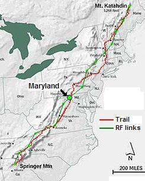
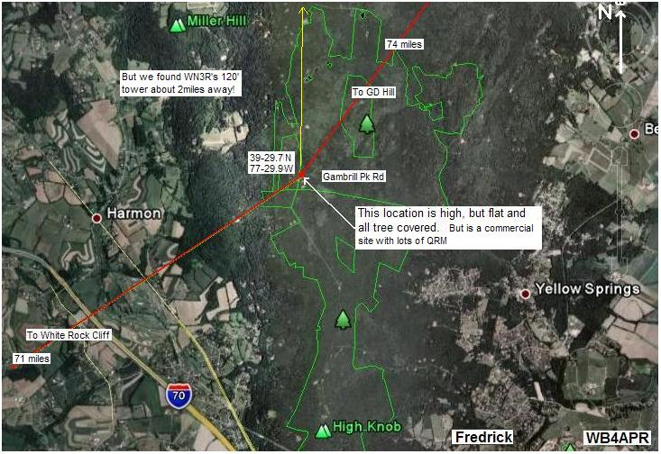
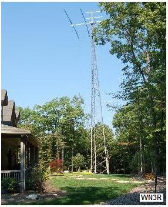
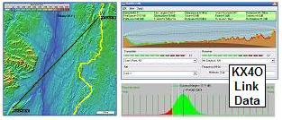
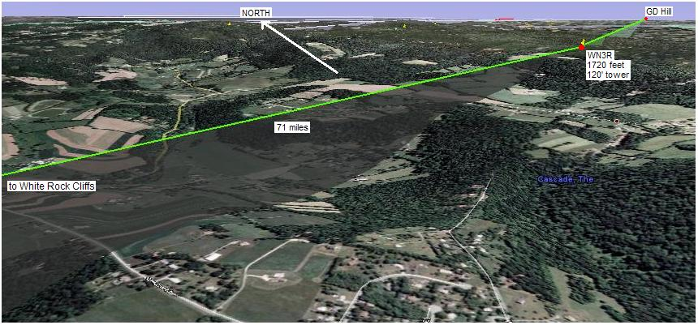
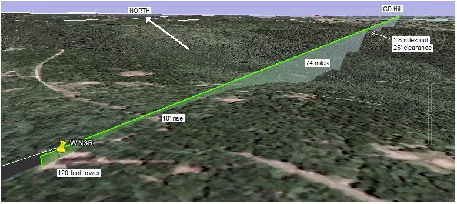
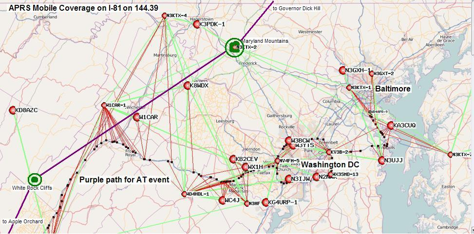

2014 SUCCESS! We had the home station (on top of Gambrisl Mountain) with the same D710 from last year which had the 10 dB deafness on Band A. After some on-air UHF voice with GD-hill we got the radio's TNC shifted over to the operating frquency in Band B and packets began to work. But the 10 dB deafness on band A required GD-hill to be in high power for voice, and we had to shift to voice on band B temoprarily to contact HAWKSBILL. But once the TNC was configured, everything was operational. Lee, N4TCW was also here to help with the event.
2013 Planning: Dick, WN3R continues to man his tower on Gambrills mountain this year. See the summary spread sheet.
2012 Planning: Dick operated a digi on his tower with good success on Saturday 21 July.
2011 Success! Dick again went to the mountain to set up his D710 on Friday. Bob was able to test it from Annapolis, and all looked good. But a later test on Saturday night had 10, 20 and 30 second delays suggesting a lose squelch. Dick arranged for a neighbor to go and tighten up the squelch and so on Sunday, MDMTNS worked perfectly. K3PDK kept his home station down in the valley running as a logging station and there we discovered that MDMTN-7 was not beaconing (later found the BCON button was off). The only other incident was another station that was mislead by the documentation and also set up his home station as MDMTNS-7 and so the logs are not clear which packets are which. There is also an open issue with respect to how well the D710's are properly digipeating. We already know that they duplicate their own originated beacon once, but is it really only once? More later as we figure it out!
2010 Success! Dick, Joe and Patrick again operated from Dick's tower and D710 to implement the digi this year. Pat Domack K3PDK assisted with a data logger. See his packet log. Back in 2009 Patrick, reported the success at Maryland Mountains. See 2009 report. In addition, here is a log of packets received in Annapolis Maryland with a beam pointed at the Maryland Mountain site in 2009. (see file). It is very curious that every packet from 2 PM to 4:41 PM was captured with apparently no gaps, but not a single packet from White Rock Cliffs or GD Hill or Camelback was seen. This is wierd, since the operator ad MD Mtns saw these other stations. Also notice that each packet was SOURCED from MD mountains and then again DIGIPEATED by MD mountains so we have discovered a minor digipeating bug in the D700. Also, later discovery showed that the Annapolis D700 that was logging these packets had prevously been used for testing and was itself digipeating HOPn-N packets adding to the confusion. But from this file, we just do not understand how none of the adjacent sites heard by MD Mountains was not captured in this file..!?!?
See the Golden Packet plan. . This is one of the 15 hill-top sites from Georgia to Maine we activate on the 3rd Sunday in July annually for 6 hours to attempt to relay a text message using hand-held radios the 2000 mile length of the Appalachain trail. This is to be a no impact Leave-No-Trace type of event of a few individuals at each site. .Other hikers equipped with APRS ham radios are welcome to participate with advance notice.
The Maryland Mountains consist of 3 ridges between Frederick and Haggerstown. The western most one is slightly higher and has the AT on it, but it cannot see over the other two into Pennsylvania. Mt Quirauk is the tall mountain with lots of Microwave equipment on it and it sits high above Fort Ritchie. But this mountain is blocked looking east to Governor Dick Hill and access is unknown.
Looking at Google Earth reveals a high point on Gambrill Park Road that has good line of sight to GD Hill and back to the WV mountains (White Rock Cliffs). But the problem was the trees and the need for a very tall mast to clear the trees. BUT... all has been solved as WN3R has stepped forward with his 120 foot tower in his backyard, right where we were looking! To see all the other places we looked coming in from WV, click here, or see all the potential paths across PA.
 ALTITUDE: . . . . . . . . . . . 1720 feet
POSITION:. . . . . . . . . . . . 39-32.23N / 77-30.01, Gambrill Park Road (WN3R's house)
LINK NORTHEAST:. . . . Governor Dick Hill . (no existing radios).
See
RF details
by KX4O
LINK SOUTHWEST:. . . . Virginia Mountains. (no existing radios).
See
RF details
by KX4O
VOICE REPEATER: . . . . 147.195 T179 Thurmont Repeater (for voice coordination)
ECHOLINK NODE: . . . . WB3GXW-L #16504 on 147.195 T179, Same as for voice coordination.
. . . . . . . . . . . . . . . . . . . . . . W3ICF-R #14613 Frederick Md
EXISTING SIGNAL:. . . . WN3R-10 Winlink node on 145.77 MHz (will digipeat on its call)
INTERFERRENCE: . . . . None. 2 miles from nearest commercial tower
TEAM LEADER:. . . . . . . Dick Hayman WN3R * arrl dot net (providing tower)
. . . . . . . . . . . . . . . . . . . . . . Patrick Domack k3pdk*dashdot.com, Joseph, NE3R (providing D700 radio)


COMMENTS: .
As you can see above, the path across the Maryland Mountains is a pretty direct shot. Quirauk Mountain is the highest spot in Maryland along the north end of the AT at N39-41.560, W77-31.199 WSW of Fort Ritchie and looks about 77.3 miles from the West Virginia Mountain sites. But its views into PA, seemed to be blocked by high land in all northeastern directions.
So we found the high ridge along the Gambrill Park Rd on Catoctin Mountain. It is tree covered but appears to have several houses along the road but set back out of sight. The path to the southwest gets through a narrow break in the western ridge towards the WV mountains, and to its northeast, it is not blocked by any other high land. It is only at 1730 Feet, but appears to be the best we can find. We welcomed any site in this area that has easy drive-up access, and can see both directions with a minimal mast. And up stepped Dick, WN3R. Check out his tower to the right:
Dick puts out a powerful punch on HF before each winter ice storm and winds, and then takes a few months to rebuild, restore, repair and get back on the air again. At the top of this tower he has located an omni antenna fed by 7/8" hardline connected to his 145.77 Winlink node WN3R-10. For this exercise he is willing to put in a D700 radio and support the AT Golden Packet attempt.
In the views below, you can see that he has a great shot over the valley coming in from White Rock Cliffs on the West Virginia line. And the RF link plotted by KX4O shows the strongest link for the event.

DETAIL LINK ANALYSIS BY KX4O: Be sure to follow the two RF links at the
top of this page to see the excellent and very detailed RF link analysis
performed for every link in this project by KX4O John Huggins.
Each RF link shows the terrain map
elevations, the AT trail in yellow, the RF path loss itself
including fresnel zones and finally a
statistical plot of the probabilities of link availability. We will very
much be looking at the results of this project compared to the pre-event
analysis and predictions. All of KX4O's links are shown on his
AT Links Page.

From WN3R's 120 foot tower, then the shot further to the Northeast has to clear a similar ridge about 1.8 miles out. Google Earth shows that he clears the ground by 25 feet or so, but then the height of his tower adds to that, to get well above the trees. This shot shown below should have no problems to Governor Dick Hill lookout tower. as shown in the accompanying RF plot by KX4O.

This next image is a digipeater trace showing the normal APRS coverage in that area and the surrounding digipeaters.

The map above shows the I-81 mobile APRS coverage using the existing digipeaters on 144.39. It happens to be a trace of my driving along I-66 and I-81 and does not really show a trace in the area of the Maryland Mountains, but you can still see where the digis are in that area. The intended AT special event path is shown in Purple.
Bob, WB4APR
See my other GENERAL page on APRS applications and Ideas on the AT
Return to the APRS HOMEPAGE or SiteMap.
{kind=link}
{kind=link}